Reward guidance algorithms steer a learned generative process toward the reward-tilted measure at
inference time. While empirically powerful, these methods are prone to reward hacking: the
guided model over-optimizes the reward at the cost of fidelity to the learned distribution. Prior work
has attributed this to the complexity of neural reward functions or implicit biases in diffusion
training, but its fundamental origins remain poorly understood.
We show that reward hacking arises from an approximation made in most practical implementations of
reward-guided diffusion — finite-particle plug-in estimation of the Doob
h-function — even in the simplest non-trivial settings of Gaussian and Gaussian mixture
targets with quadratic rewards. In closed form, we isolate two distinct failure modes of the plug-in
estimator: it leads to reward hacking within each mode and it cannot select
high-reward modes.
We propose a closed-form reward damping schedule that corrects the within-mode bias with no additional
compute, and clarify the role of best-of-n sampling in compensating for the mode selection
failure. Experiments on Gaussian mixture targets, a 2D checkerboard, and FLUX.1 text-to-image generation
confirm that our theoretical insights carry over to practical settings.
Reward damping in action
Below: base FLUX.1 samples guided with ImageReward. Naive plug-in guidance hacks the reward; reward damping
(ours) preserves a sample faithful to the prompt.
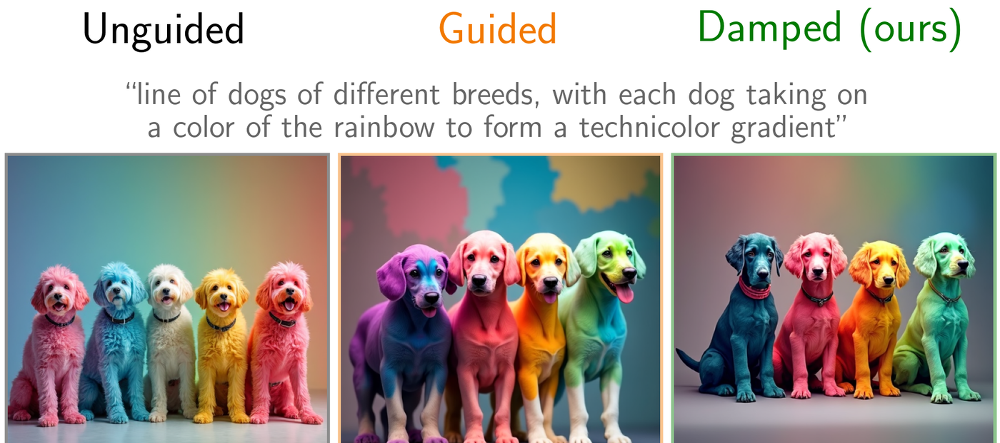
“dogs of different breeds, each taking on a color of the rainbow”
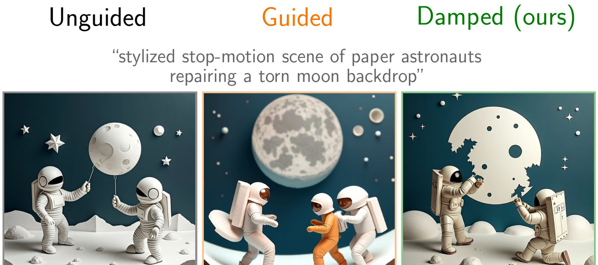
“paper astronauts repairing a torn moon backdrop”“sculptor in an open-air studio working on a headless statue”“skyscraper under construction, missing its middle third”“brass automaton praying to a human child in an abandoned temple”
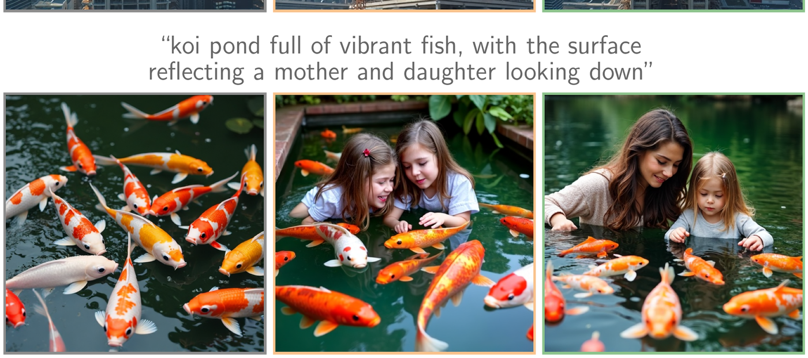
“koi pond full of vibrant fish, with the surface reflecting a mother and daughter
looking down”
Cover figure. We introduce reward damping, a simple and principled guidance
schedule to mitigate reward hacking. Across six text prompts, naive guidance produces over-optimized
artifacts (warped subjects, lost compositional structure), while damped guidance keeps the sample close to
the base distribution while still increasing reward.
Overview
We study reward-guided sampling: given a base flow- or diffusion-model that samples
from a distribution and a reward function, we want samples from a reward-tilted
distribution that puts more mass on high-reward outcomes. The standard approach is to apply a guidance
term, derived from the Doob h-transform, that nudges each step of the sampler toward
high-reward regions. In practice, this term is intractable, so it is replaced with a finite-particle
plug-in estimator.
Overview. Compared to analytic reward tilting, practical guidance algorithms
over-concentrate within each mode and fail to select high-reward modes. We propose
damped reward guidance to fix the first issue, and clarify the role of best-of-n in
fixing the second; combined, they approximately recover the analytic tilt.
What we prove (informally)
Even in the simplest non-trivial settings — Gaussian and Gaussian-mixture targets with
quadratic rewards — the plug-in estimator exhibits two distinct failure modes
that are derivable in closed form:
Within-mode reward hacking. The estimator over-rewards the model along directions
of high reward, producing samples that drift off the data manifold even when only one mode is
relevant.
Mode-selection failure. The estimator has no mechanism to up-weight a distant
high-reward mode against a closer low-reward mode — guidance cannot reweight the mixture.
We propose a closed-form reward damping schedule that fixes (1) at no extra compute,
and show that best-of-n sampling is the natural fix for (2). See the
paper for the precise statements and proofs.
Failure mode 1: within-mode reward hacking
On a single Gaussian target with a quadratic reward, the analytic tilt has a known closed form. The plug-in
estimator overshoots it: samples concentrate too tightly and shift too far in the reward direction.
Damping restores the analytic distribution.
Analytic tilt. Ground truth reward-tilted measure.Plug-in (k=1). Over-concentrates and overshoots the mean.Damped (ours). Recovers the analytic tilt at the same compute.
Failure mode 2: mode selection
On a 1D Gaussian mixture with a step-function reward favouring the right mode, plug-in guidance
cannot reweight the mixture toward the high-reward mode — trajectories follow whichever mode they
were initialized near. Best-of-n resampling recovers the correct mixture weights.
Mode selection on a 1D Gaussian mixture. Plug-in guidance is tied to the initial seed
and cannot route mass to the high-reward mode; best-of-n selection at the end of sampling
approximately recovers the analytic mixture weights.
Experiments
We confirm the theory on a 2D checkerboard target and on FLUX.1-dev with three reward families:
a hand-crafted masked-intensity reward, a colour-channel reward, and the learned ImageReward
human-preference reward.
Within-mode hacking on FLUX.1
Masked intensity
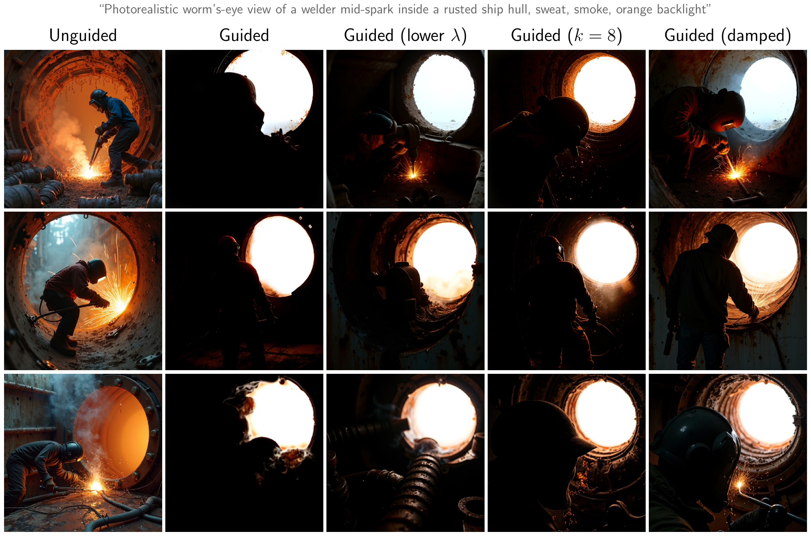
Masked intensity reward. Reward is mean pixel intensity inside a top-right circular
mask minus mean intensity outside. Naive guidance maximizes the masked-region brightness by removing
the welder from the frame; reward damping obtains a high-reward sample including the welder.
Blueness reward
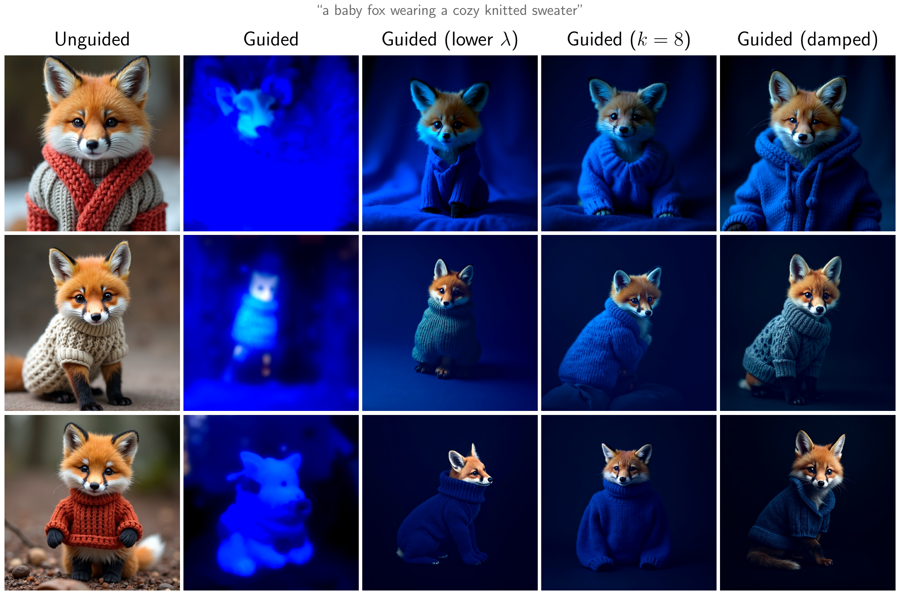
Blueness reward (fox). Naive guidance creates overwhelmingly blue outputs that
wash out the fox's orange fur; reward damping recognizes that the fox should remain orange while
the sweater and background turn blue.
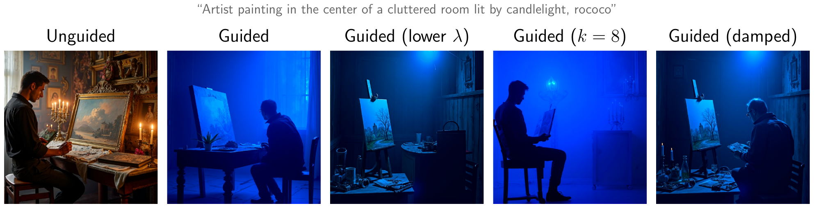
Blueness reward (artist). Naive guidance produces blue images that forget the
artist or candles, while reward damping produces a very blue image that retains the artist and
the warm candlelight.
ImageReward (learned human-preference)
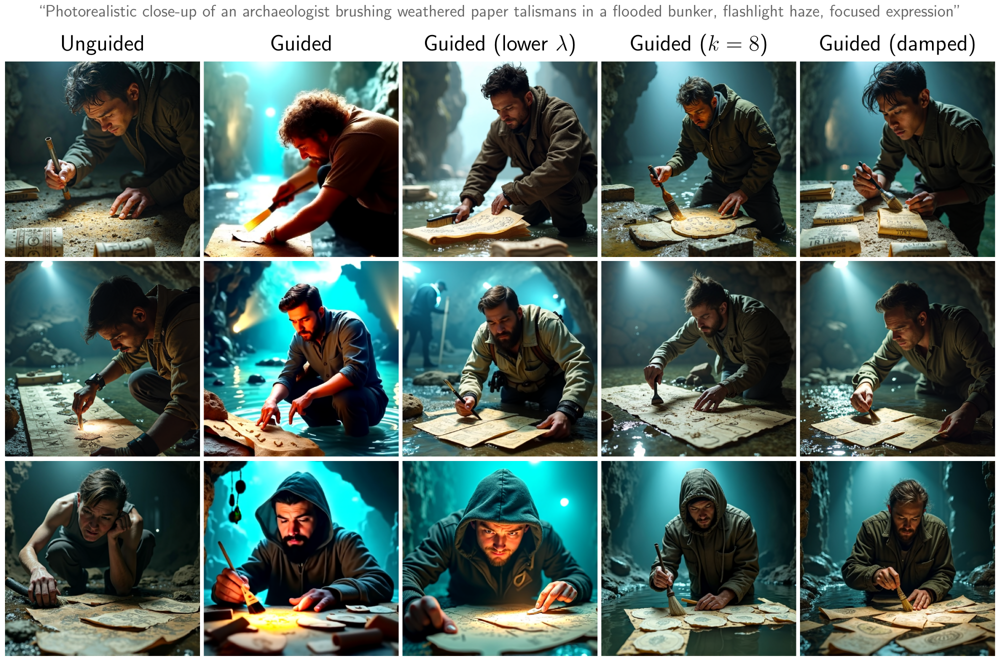
ImageReward (archaeologist). Both unguided and naively-guided images produce
unnatural artifacts or fail to show a brush; damped guidance produces a more natural image with
a visible brush.
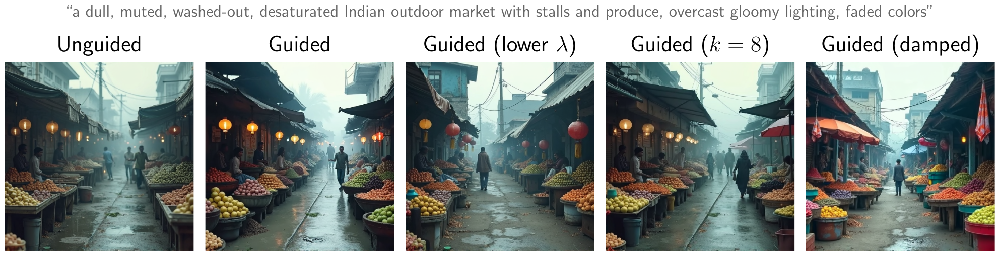
ImageReward (market). Image scored against
“a vibrant Indian outdoor market with colorful stalls and produce.”
Naive guidance brightens the lamps while leaving the rest washed out; damping produces a more
balanced improvement across brightness and color.
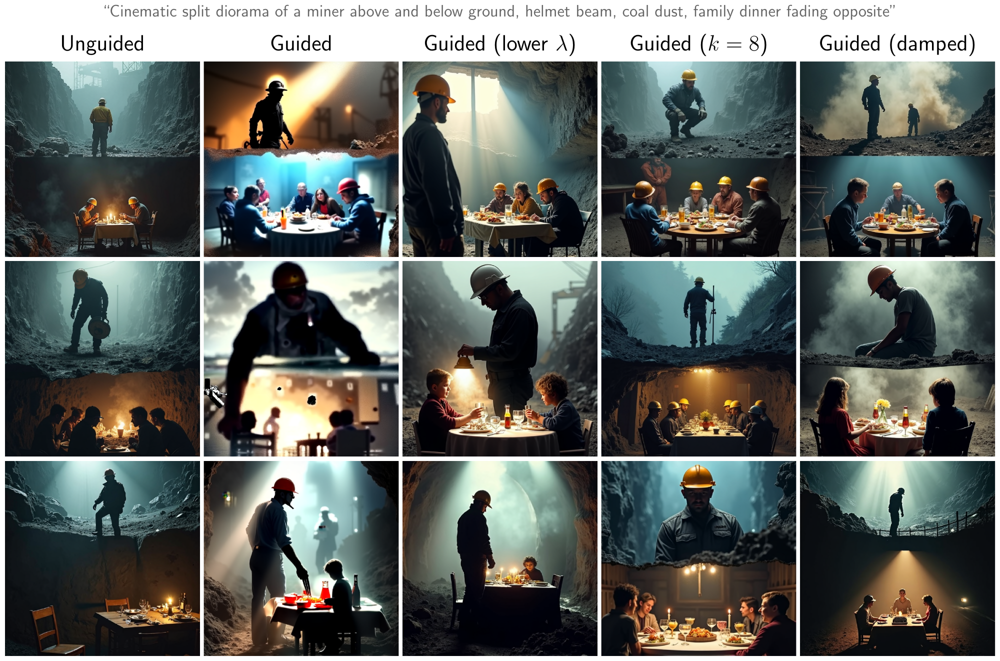
ImageReward (miner). Naive guidance hacks ImageReward by ignoring the
split-diorama constraint; reward damping produces dramatic images that still respect the
constraint.
Mode selection: 2D checkerboard
Checkerboard guidance. Unlike plug-in guidance, best-of-n can select
modes. With reward damping, best-of-n significantly improves fidelity to the analytic
tilt.
Checkerboard statistics. Mean reward and covariance trace for each method
(λ = 10). Uncertainties are ±2 standard errors of the mean; covariance-trace
uncertainties are bootstrapped.
Method
Mean reward
Cov. trace
Analytic tilt
0.914 ± 0.003
0.457 ± 0.021
Plug-in (k=1)
0.764 ± 0.004
1.930 ± 0.048
Plug-in (k=8)
0.804 ± 0.007
1.397 ± 0.068
Best-of-2
0.914 ± 0.003
0.520 ± 0.026
Best-of-4
0.978 ± 0.002
0.107 ± 0.010
Best-of-4, σdamp=0.2
0.920 ± 0.004
0.429 ± 0.022
Mode selection on FLUX.1
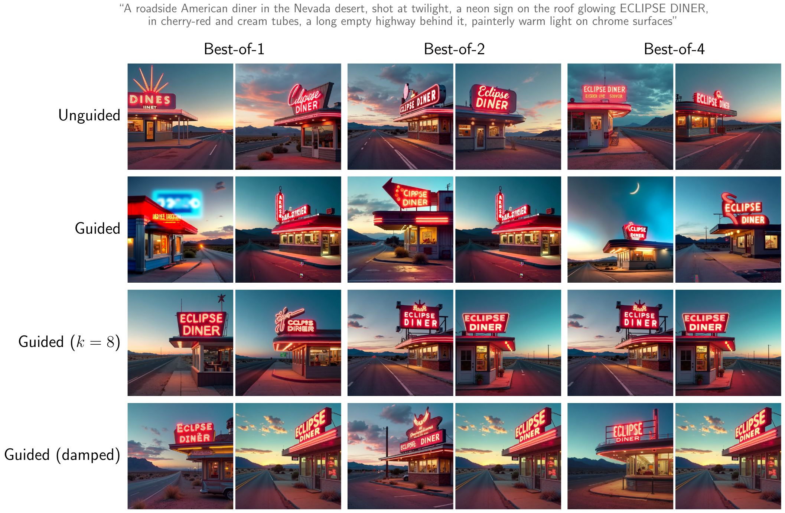
FLUX mode selection (ECLIPSE diner). VLM reward derived from
“Does this image clearly show a neon sign with the word ‘ECLIPSE’ as the main
readable text?” Plug-in guidance hacks the reward; damping helps slightly; best-of-n substantially improves it — confirming the importance of the initial seed for mode selection.
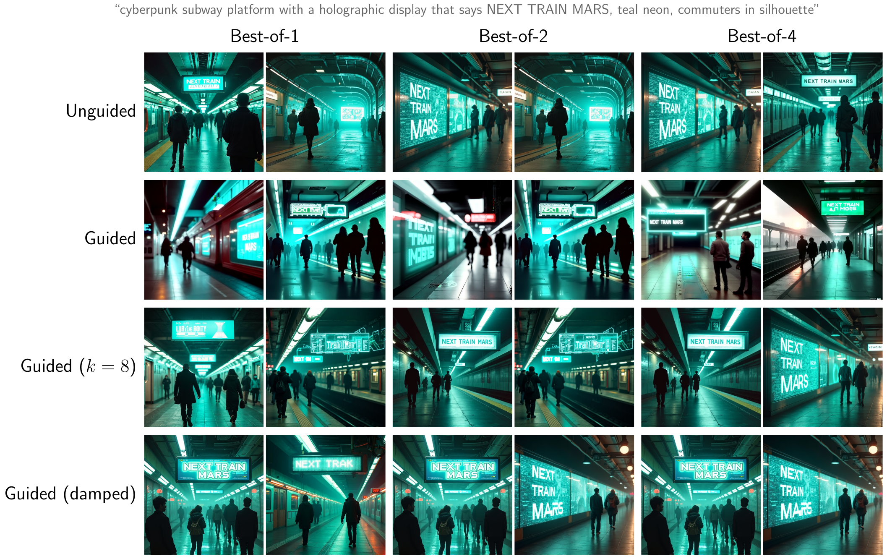
FLUX mode selection (NEXT TRAIN MARS). VLM reward derived from
“Does this image clearly show a display with the text ‘NEXT TRAIN MARS’ as the
main readable text?” The qualitative pattern reproduces: plug-in guidance hacks the
reward, and best-of-n substantially improves it.
BibTeX
@article{dandapanthula2026tilting,
title = {Are we really tilting? The mechanics of reward guidance in flow and diffusion models},
author = {Dandapanthula, Sanjit and Boffi, Nicholas M.},
journal = {arXiv preprint arXiv:XXXX.XXXXX},
year = {2026}
}